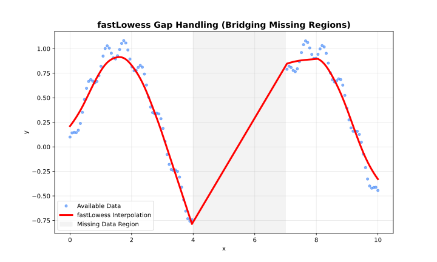

See also: Choosing an Execution Mode for a comparison of all three modes.
The default mode. Processes the entire dataset at once and supports all features.

Gap handling
When to Use
- Dataset fits comfortably in memory
- Need confidence/prediction intervals
- Need cross-validation
- One-shot analysis
Parameters
| Parameter | Default | Description |
|---|---|---|
fraction |
0.67 | Neighbourhood size |
iterations |
3 | Robustness iterations |
confidence_intervals |
NULL |
CI coverage (e.g. 0.95) |
prediction_intervals |
NULL |
PI coverage (e.g. 0.95) |
parallel |
FALSE |
Enable CPU parallelism |
backend |
"cpu" |
"cpu" or "gpu"
|
Example
library(rfastlowess)
set.seed(42)
x <- seq(0, 2 * pi, length.out = 100)
y <- sin(x) + rnorm(100, sd = 0.3)
model <- Lowess(
fraction = 0.5,
iterations = 3,
confidence_intervals = 0.95,
prediction_intervals = 0.95,
return_diagnostics = TRUE
)
result <- fit(model, x, y)
print(result$confidence_lower)
print(result$confidence_upper)
print(result$diagnostics$r_squared)